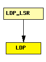

File: Network/LDP/LDP.ned
C++ definition: click here
Handles and processes LDP messages.
The LDP protocol is used by one LSR (Label Switched Router) to inform another LSR of the label bindings it has made. The LSR uses this protocol to establish label switched paths through a network by mapping network layer routing information directly to data-link layer switched paths.
Operations
All LDP message types are subclassed from LDPPacket, and include LDPHello, LDPNotify, LDPLabelRequest, LDPIni and LDPAddress.
Message processing in the LDP module is explained in LDP Message Processing
Author: Andras Varga, Vojta Janota
The following diagram shows usage relationships between modules, networks and channels. Unresolved module (and channel) types are missing from the diagram. Click here to see the full picture.
If a module type shows up more than once, that means it has been defined in more than one NED file.
| LDP_LSR | An LDP-capable router. |
| Name | Type | Description |
|---|---|---|
| holdTime | numeric | |
| helloInterval | numeric |
| Name | Direction | Description |
|---|---|---|
| tcpIn | input | |
| udpIn | input | |
| tcpOut | output | |
| udpOut | output |
simple LDP parameters: holdTime : numeric, helloInterval : numeric; gates: in: tcpIn; in: udpIn; out: tcpOut; out: udpOut; endsimple